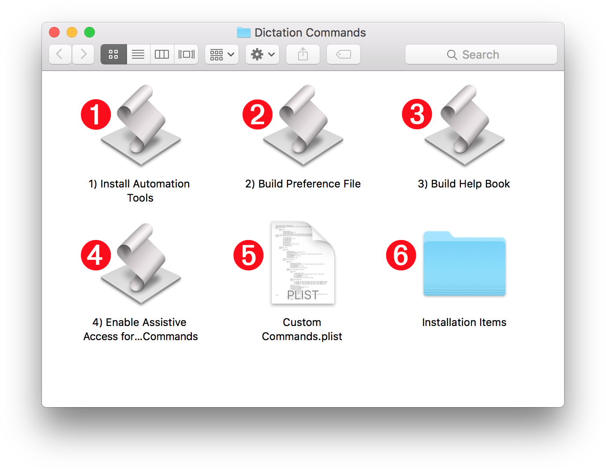

Custom Commands Archive
The video below (7:02) shows how to install the Custom Dictations Commands set (OS X El Capitan).
The installation of the Custom Dictation Commands collection is unique for each computer — it is not just a matter of copying specific files to certain locations in your Home directory. It’s more a process akin to mixing fresh ingredients together to create a spectacular culinary treat!
And to make it easy for you to take advantage of these great tools, the installation procedure is a four-step process of launching four individual applets in sequence. Just follow the instructions on these pages.
Download the Installer Archive (v255)
TIP: If you’ve already installed the set before, you can find out the latest available version with the command “what is your latest version” and you can get it with the command “download your latest version” which will download the archive to your Downloads folder.
DO THIS ►DOWNLOAD and unzip the archive containing the following items: (⬇ see below )

1 Automation Tools Installer • This applet will activate the system Script Menu and install the script libraries and support scripts contained in folders 6 and 7 .
2 Preference File Builder • This applet will create the Dictation Commands preference file and link scripts.
3 Help Book Builder • This applet extracts the documentation data from the Custom Commands property list file 5 and use it to build a comprehensive Apple Help Book containing a listing and description for each available command. TIP: you can summon the help by speaking the command: “Show your help”
4 Enable Assistive Access • For those commands that cannot be accomplished through the scripting or OS frameworks, Dictation Commands uses the Accessibility APIs. This applet will guide you to enable access to these APIs for the custom dictation commands.
5 Custom Commands Property List • This property list file contains information for generating all of the custom dictation commands. It must remain in the same folder as the installer applets when they are run.
6 Installation Items • A collection of script libraries and support scripts that contain the scripting routines for performing the actions of the custom dictation commmands. All of the libraries are editable and can be opened in the Script Editor application, or 3rd-party editors like ASObjC Explorer.
Begin the Installation
DO THIS ►Start with the first applet (Automation Tools Installer) and run each of the four applets in order, following the instructions that appear in their dialogs. When you’ve completed running all four, Dictation Commands will be ready to use.